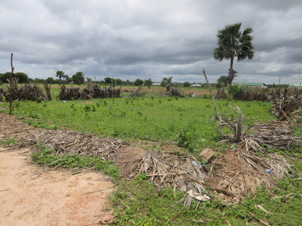

De volgende blog is geschreven door Joes Janmaat n.a.v. haar afstudeeropdracht waarbij ze met ons heeft samengewerkt.
Sinds september 2016 ben ik aan het afstuderen op het onderwerp ‘Voluntourism’ binnen de faculteit Industrial Design aan de TU/e. Naar mijn mening (en natuurlijk flink gefundeerd door experts en literatuur) zou de discussie over dit topic verder moeten gaan dan het bekritiseren van de vrijwilligers of het willen stoppen er van – hoe kan design er voor zorgen dat goed bedoelt vrijwilligerswerk geen negatieve impact heeft?
In stichting Bonfari vond ik al snel mijn bondgenoot; (h)erkennen dat de huidige gang van zaken niet de meeste optimale is en vervolgens invulling geven aan deze zogenaamde ‘need for change’ binnen de wereld van internationaal vrijwilligerswerk.
Tijdens de laatste maanden heb ik door design research inzicht, begrip en gevoel gekregen voor de design context en diens stakeholders. Een belangrijk gedeelte van mijn onderzoek bestond uit een trip naar Gambia afgelopen December. Ik heb 3 weken samen met Simon in Tintinto geleefd en gewerkt. Doordat Simon er inmiddels al ruim 3 maanden zat werd ik binnen no-time weg wijs gemaakt en geïntroduceerd bij de lokale bevolking.

Als advocaat van de duivel zette ik tijdens mijn verblijf voortdurend vraagtekens bij alle vrijwilligers activiteiten en mijn/onze interactie met de lokale bevolking. Dit leverde een achtbaan aan interne debatten op (en externe met Simon). Ook heb ik dit onderwerp eindeloos bediscussieerd met mijn nieuwe Gambiaanse vrienden. Naast dat dit een interessante, leerzame ervaring was, was het ook vermoeiend, vrij irritant en gaat het voorbij aan de essentie van het daar zijn.


Ja, ik ben er inmiddels achter dat ‘goed doen’ een stukkie complexer is dan een waterput uit de grond stampen of tweedehands schoenen uitdelen. Maar bovenal heb ik bijzondere mensen ontmoet, die me een veilig en bijzonder welkom gevoel gaven in ‘donker’ Afrika en me inzicht boden in hun cultuur (en vice-versa). Het continu stil staan bij het feit of iets de juiste manier van helpen is/of er überhaupt geholpen moet worden is voor mij niet waar het verblijf van een vrijwilliger om draait. De unieke ervaring van het leven in een zo andere context/cultuur dan je eigen en het leven met de lokale community. De waarde (impact) van het vrijwilligerswerk is wat mij betreft te vinden in deze interacties.


Het smsje dat ik kreeg terwijl ik op mijn vlucht naar Nederland wachtte slaat wat mij betreft de spijker op zijn kop; “Wish you all the best, just see us as two friends from different backgrounds. May you reach home safe.”
De laatste update over het lesgeven is al een tijdje geleden, en in Gambia kan er in korte tijd veel veranderen. De eerste 2 weken van het schooljaar was ik hoofdverantwoordelijke voor de lessen van de negende klas (9A en 9B), daarna heb ik deze lessen 2 weken overgedragen aan een nieuwe leraar, inmiddels is er weer een andere leraar die de lessen doet en ga ik beginnen met het bijspijkeren van de wiskundekennis van de leraren zelf.
De kopieermachine
Toen ik zelf les aan het geven was, kwam ik erachter hoeveel geluk ik op de middelbare school heb gehad. Voornamelijk omdat op mijn school iedereen voorzien werd van een set goede schoolboeken om uit te leren. Hier is de situatie iets anders, ik had als docent als enige een wiskundeboek, waar helaas niet eens alle informatie in klopte. Aangezien de leerlingen toch wat aantekeningen nodig hebben om op terug te vallen (voor ieder vak) bestaat een groot deel van de schooldag uit het op het bord kopiëren van informatie uit schoolboeken en het in het schrift kopiëren van deze informatie door alle leerlingen. Hier leek niks aan te veranderen, dus heb ik vooral gefocusd op het interessant maken van de rest van de lestijd. Gelukkig wordt dit van alle leraren verwacht en wordt men hier ook in gesteund door bijvoorbeeld de voorbereiding van het lesplan waarin goed moet worden nagedacht over hoe een bepaald onderwerp uitgelegd en overgebracht dient te worden.
Geen dag hetzelfde
Na 2 weken aan pogingen tot kundig lesgeven had de school geluk, er kwam een nieuwe (ongeschoolde) wiskundeleraar helpen die veel wiskundekennis had en een heel goed wiskundeboek had. Hij zou nog minimaal tot het einde van het schooljaar blijven, dus ben ik mijn lessen aan hem gaan overdragen. Dit ging snel en de afgelopen 3 weken heeft hij Grade 9 lesgegeven, echter is hij nu tot ieders verrassing een poging gaan doen om via Italië (op de boot) de EU in te komen. Gelukkig is er vorige week een volledige opgeleide bovenbouw wiskundeleraar bijgekomen die gauw de lessen op kon vangen. Er zijn nog 3 andere leraren die in theorie bovenbouwwiskunde kunnen geven mocht er weer iets veranderen, voorlopig ga ik hen helpen de moeilijkere onderwerpen ook helemaal onder de knie te krijgen zodat de school (qua wiskunde) overal op voorbereid is!
Na 6 maanden voorbereiding in Nederland en 2 maanden hier in Gambia, is het dan eindelijk tijd om het eerste echte project uit te voeren! Al het harde werken is de afgelopen weken samengekomen in de uitvoering van het moestuin project.
Change of plans
Het tot in de details uitgewerkte schoolproject, waarbij tegelijkertijd zou worden gewerkt aan het ommuren van de school, het omheinen van de schooltuin en het verstevigen van de marktkraam, werd afgelopen maand nogal in de war geschopt (op een goede manier). Er bleek een derde partij voornemens te zijn om binnen een jaar de volledige ommuring van het schoolterrein te verzorgen. Dit is geweldig nieuws voor de school en zorgde er tegelijkertijd voor dat we onze plannen moesten bijstellen.
In overleg met de schooldirectie en met mijn medebestuurders van hebben we besloten om de schooltuin alsnog te omheinen. De omheining zal echter niet van steen worden, maar zal volledig van ijzerdraad worden gemaakt. Hiertoe is besloten omdat de volledige muur er voorlopig nog niet staat en de moestuin uiteindelijk toch een omheining zal moeten krijgen, ook wanneer de muur er komt.
Voor de marktkraam geldt dat deze weer tijdelijk is opgebouwd, hiermee werkt deze zoals hij nu is voldoende. De marktkraam zal het hoogstwaarschijnlijk nog overleven tot de schoolmuur er is. Dit betekent dat dit deel van het project naar de toekomst zal worden verschoven.

The African Way
Nu het project een andere vorm heeft gekregen dan origineel gedacht, moest er ook een nieuwe begroting komen. Door het wegvallen van het maken van een muur bedroeg de nieuwe begroting ongeveer een derde van de vorige versie. Dit betekende dat er voldoende budget was, dus na goedkeuring van alle betrokkenen konden we aan de slag! De eerste stap was boodschappen doen. Om de moestuin ook daadwerkelijk aan te leggen moest er gewinkeld worden. Op het eerste boodschappenlijstje stonden 16 ijzeren palen van 6 meter en 3 rollen ijzerdraadhek van 25 bij 2 meter. Budget technisch was dit allemaal geen probleem, wat je echter wel nodig hebt is een vriendelijke taxichauffeur om deze boodschappen over de kilometers lange hobbelige zandpaden te verplaatsen.
.jpg)
Na het ijzerwaar moest er ook aan de fundering van het hek worden gedacht, hiervoor wordt beton gebruikt. Beton worden gemaakt van cement, zand, grind en water. Het cement kon worden besteld bij een man in het dorp. Het zand was een kwestie van een telefoontje naar een bevriende vrachtwagenchauffeur die een berg kwam afleveren bij de school. Voor het grind moesten we echter de handen uit de mouwen steken, maar na een ochtend scheppen hadden we ook het grind verzameld.
.jpg)
.jpg)
Een paar dagen nadat alle spullen waren verzameld kwam Frank aan in Gambia om me een weekje te vergezellen. Er was nog een hoop werk te verzetten om een omheinde tuin te realiseren, dus werd hij meteen aan het werk gezet. Om de zaken wat gemakkelijker te maken was het op de eerste dag van de aanleg één van de warmste dagen sinds ik hier ben. Gelukkig kregen we hulp van een aantal vrijwilligers van het schoolpersoneel, die met een lekkere sandwich gemotiveerd werden.
.jpg)
.jpg)
.jpg)
Om de het hek voldoende stevigheid te geven om nog jaren mee te gaan moesten er 28 gaten gegraven worden. Het graven van 28 gaten, in de harde Afrikaanse grond, bij 37 graden Celsius, was met zijn tweeën wel een uitdaging geworden. We stonden er gelukkig niet alleen voor! En met alle hulp stonden binnen de kortste keren alle palen in de grond. Als bonusproject konden we van wat restbeton de kraan van de school wat steviger in de grond zetten (en onze bijdrage aan de school vereeuwigen).
.jpg)
Aangezien we de palen op vrijdag in de grond hebben gezet, konden ze het weekend goed uitharden. Na het weekend kon er daardoor worden begonnen aan het bevestigen van het hek aan de palen. Initieel zouden we op maandag van start gaan met het neerzetten van het hek, maar dit ging niet door omdat onze belangrijkste hulp in het ziekenhuis was met zijn zoontje die malaria had opgelopen. Gelukkig is dit helemaal goed gekomen en zijn we op dinsdag begonnen aan het aanleggen van het hek. Wij dachten hier wel in een paar uurtjes mee klaar te zijn, maar ook dit bleek een dagtaak ondanks alle hulp. Maar het harde werken loonde wel! Na twee dagen werken stond er een omheining, alleen de poort moest nog worden toegevoegd. Moe maar voldaan sloten wij onze tweede werkdag af.
.jpg)
.jpg)
De avond dat we het hek klaar hadden, kregen we een belletje van Giteh dat onze poort klaar was. Giteh is de lokale ijzersmid die zaken voor ons maakt op het moment dat er gelast moet worden. Nog diezelfde avond wordt de poort bij ons op het compound afgeleverd. Nu we ook dit laatste onderdeel van de tuin er was, stond niets ons meer in de weg om de tuin de volgende dag af te maken. Ook dit bleek weer meer werk dan van tevoren gedacht, maar met nog eens een halve dag werk in de vingers was de tuin dan echt klaar! Nog dezelfde week is er door de school begonnen met lesgeven in de tuin, zoals te zien op de foto’s.
.jpg)
.jpg)
.jpg)
-
In de twee maanden dat ik in Tintinto en omgeving rondloop heb ik maar zelden iemand gezien die op me lijkt. In Tintinto wonen geen blanke mensen, in Brufut heb ik er ook nog nooit een gezien en zelfs op drukke plekken zoals het vissersdorp Tanji of de markt van de stad Serrekunda heb ik niet meer dan een enkeling zien lopen. Het is dan ook niet gek dat de bewoners van Tintinto en Brufut er nogal een spektakel van maken als ik langsloop.
Toebab Minty
Ze hebben een woord voor wat ze in het Engels "White man" noemen: toebab. Kinderen schreeuwen het zo gauw ze een blanke zien, meestal gevolgd door minty, waarmee ze snoepje bedoelen. Blijkbaar zijn ze er zo aan gewend dat blanke mensen snoepjes uitdelen, dat ze nadat je twintig keer voorbij bent gelopen en in het Mandinka (de lokale taal) hebt gezegd dat je geen snoepjes hebt, ze de 21e keer gewoon weer “Toebab Minty” roepen. Gelukkig heb ik, met mijn verschijning van bijna 2.10m, het geluk dat ik ook in Nederland wordt nagekeken. Ik heb dus al even mogen oefenen met geen last hebben van voorbijgangers die je verbaasd aankijken!
'Droombaan'
Het andere uiterste is te zien in het toeristengebied genaamd Senegambia, een strook kustgebied met resorts en restaurants, waar de verhoudingen op sommige plekken omgekeerd zijn. Wat me hier vooral opviel was de hoeveelheid blanke vrouwen van middelbare leeftijd die hand in hand lopen met een twintigjarige Gambiaan. Na wat onderzoek bij de lokale bevolking blijkt dat veel jonge mannen trouwen met een Europese vrouw als "droombaan" zien. Ze willen er zelfs een aantal diepgewortelde traditionele rechten voor inleveren, zoals heerschappij over de vrouw of het "recht" om met maximaal 4 vrouwen te trouwen.
Er zijn dus nogal wat cultuurverschillen tussen Nederland en Gambia, en er zijn in beide richtingen dingen die we van elkaar kunnen leren. Gezien de technologische vooruitgang lijkt het me onvermijdelijk dat we dat binnenkort ook daadwerkelijk gaan doen! Voorlopig ben ik blij dat ik van beide culturen kan leren, maar ik denk toch dat ik als ik weer terug ben de emmers weer inruil voor de douche, al zal het met iets meer waardering zijn.
In Gambia is veruit de grootste religie de Islam, er schijnen ook Christenen te zijn, maar die heb ik nog niet gezien. De meeste mensen die ik hier ken gaan netjes 5x per dag naar de Moskee. Het is dan ook niet verrassend dat de islamitische feestdagen het grootst gevierd worden.
Offerfeest
Het offerfeest, of Tobaski zoals het hier heet, is volgens de locals de grootste feestdag van het jaar. Het heeft wat weg van kerst, iedereen gaat lekker eten met de hele familie, maar ook van St. Maarten en carnaval, de kinderen gaan namelijk alle huizen langs (voor geld ipv snoep) terwijl ze superhippe outfits dragen. Echter heeft het offerfeest ook nog een zeer uniek aspect, in de ochtend wordt er namelijk door vrijwel iedere familie een dier geslacht. Dit zou een ram moeten zijn, maar afhankelijk van de financiële situatie kan een geit of (samen met andere families) een koe ook.
Net als rond kerst en oud en nieuw in Nederland is in Gambia rond Tobaski iedereen druk druk druk. De week ervoor worden er voorbereidingen getroffen en zorgt iedereen dat er iets te slachten is, de meesten houden zich rond deze tijd niet met hun werk bezig, ze hebben andere dingen aan hun hoofd.
Onze geit
De familie die op hetzelfde compound als ik woont had helaas een financiële tegenvaller gehad, waardoor ze geen geld voor een dier hadden. Ik merkte uit gesprekken met anderen dat de families die geen eigen dier hebben zich meestal erg schamen, dit is een erg belangrijk onderdeel van een erg belangrijke dag. De familie hier zorgt al een maand heel goed voor me, daarom heb ik voor deze keer geld voorgeschoten om een geit te kopen, hierdoor kon ik zelf ook alle festiviteiten (en rituelen) meemaken.
Op de dag zelf werd dus onze geit geslacht en hebben we er van alles van gegeten: darmen, lever, maag en de normalere stukken vlees. De volgende dagen konden we er ook nog van eten, eindigend met het kaalgeschoren hoofd en de inhoud daarvan. Al met al was het een hele ervaring! Doordat de festiviteiten in heel het land nog een paar dagen doorgingen, is zelfs de eerste schoolweek een week naar achteren geschoven. De voorbereidingen voor het openen van het schooljaar zijn in volle gang, ik hou jullie op de hoogte van de vorderingen!
Aan de slag
Alhoewel ik op het moment van buikgriep aan het herstellen ben, is het hoog tijd voor een update! Door de goede contacten hier ben in aardig aan het ‘inburgeren’ en wordt het steeds duidelijker wat ik kan doen in de tijd dat ik hier ben. Mbemba, Omar en ik komen steeds meer op één lijn en dat gaat twee kanten uit. Aan de ene kant heb ik de lokale verwachtingen voor de muur wat moeten temperen, aan de andere kant hebben we een mooie oplossing kunnen vinden voor het tekort aan opgeleide wiskunde docenten. Verder heb ik de plannen van de moestuin verder uit kunnen werken begint de hitte íets af te nemen. Wil je de laatste status van de projecten zien? Kijk dan op www.bonfari.net/#projecten, daar komen ook steeds nieuwe foto’s bij. Voor nu veel leesplezier!
Op één lijn komen
Wat betreft de projecten is er het een en ander opgehelderd, helaas blijkt de communicatie (die voornamelijk via email verlopen is) soms verkeerde verwachtingen te hebben geschapen. Waar wij vroegen om een prijsindicatie van de muur om de moestuin, gingen ze er hier in Gambia vanuit dat er direct een volledig uitgesplitste begroting moest worden opgemaakt. De verwachting hier was dat deze begroting direct geldelijk voldaan kon worden, terwijl we in Nederland nog hard bezig zijn om fondsen te werven om de projecten uit te voeren.
Gelukkig zijn de meeste onduidelijkheden inmiddels uitgesproken en zitten we nu op één lijn. Ik heb aangegeven dat wij natuurlijk graag een plan zien, maar dat we ook graag meedenken over verbeteringen en kostenbesparingen aan het plan. Als een project hetzelfde bereikt voor de helft van het geld kan het resterende geld weer in nieuwe projecten worden gestoken.
De muur
Al snel werd duidelijk dat een muur van cementblokken zeer gewenst is om loslopend vee en buitenstaanders buiten het schoolterrein en de moestuin te houden. De pogingen om gewassen te verbouwen in de moestuin en hoognodige schaduw te creëren d.m.v. het planten van boompjes en struiken slagen helaas niet vaak. Ondanks de verwoede pogingen van de caretaker om koeien en geiten weg te jagen... Helaas is het ommuren van het gehele schoolterrein ver buiten ons budget. Realistischer is het om een deel van de muur te bouwen, wat gecombineerd kan worden met de marktkraam en de moestuin.

De omheining van de moestuin is best lastig (zie onderstaande foto) maar kan, als we het goed uitvoeren, een onderdeel worden van de ommuring van het totale schoolterrein. Door de ‘buitenkant’ van de moestuin van de muur te bouwen (van 24 bij 24 meter) en de andere hoek te omheinen met een ijzerdraadhek (zie foto) kan een begin gemaakt worden met de omheining van de school. Daarnaast zal hiermee de huidige oppervlakte van de moestuin verdubbelen, zodat er meer ruimte is voor het verbouwen van gewassen.
Naast deze hoek voor de moestuin willen we de muur doortrekken, dit stuk is zeer geschikt als achterkant van een marktkraam. Door de marktkraam hier te bouwen bied deze de beste bescherming tegen de weersomstandigheden en kunnen de leerlingen makkelijk een betaalbare maaltijd halen. Naast de muur zijn er nog wat ijzeren palen aan de voorkant nodig, zodat de volledige marktkraam niet meer vatbaar is voor termieten (die de huidige houten marktkraam nog wel eens aanvreten).
De begroting
Na gezamenlijk nageteld te hebben hoeveel cementblokken en benodigdheden er nodig zijn voor de muur, is de onderstaande begroting ontstaan. In deze begroting missen helaas de prijzen van de overige benodigdheden nog. We (Mbemba, Omar en ikzelf) verwachten dat deze kosten dankzij de spullen die we al hebben niet hoger zullen zijn dan een paar honderd euro (update volgt). Om de kosten te drukken is ook het idee ontstaan om ouders van schoolkinderen te vragen een dagje te helpen, helaas is in het verleden gebleken dat de ouders lastig te motiveren zijn om kosteloos mee te helpen. Uiteraard zal ik een poging doen hier verandering in te brengen. Qua financiële middelen is de stichting al een heel eind om dit project te kunnen financieren, maar helaas zijn we er nog niet helemaal. Heb je nog paar euro over voor een goed doel? Dan horen wij dat graag!
Wiskundekennis duurzaam inzetten
In Gambia zijn wiskundeleraren helaas erg schaars, landelijk worden deze tekorten opgevangen door jongeren die zelf vers van de middelbare school af komen in te zetten. Hier in Tintinto is dit niet anders: De drie klassen van de bovenbouw (grade 7, 8, en 9) hebben samen maar één wiskundedocent.
Ik wil mijn wiskunde kennis van de TU graag inzetten om de leerlingen te helpen, maar ik heb geen docentenopleiding gevolgd. Om mijn kennis zo duurzaam mogelijk in te zetten en er voor te zorgen dat er na mijn vertrek nog steeds wiskunde gegeven ben in met Mbemba en de docenten samen gaan zitten. Na lang overleg hebben we een oplossing gevonden die volgens mij zowel gedurende mijn tijd hier als op de lange termijn voordelig is.
Van nu tot december (hier het eerste trimester) zal ik de huidige wiskunde docent helpen met het bijspijkeren van zijn kennis. Daarnaast ga ik in een partnerschap met een Science docent, die nu algemene natuurwetenschappen geeft, een klas lesgeven. Zo kan ik beide docenten helpen hun wiskunde niveau op te schroeven en tegelijkertijd de huidige klas de les geven die ze moeten hebben. Vanaf december zijn beide docenten dan op het niveau van Grade 9 wiskunde en kunnen zij de klassen zelfstandig lesgeven. Ik heb in de zomervakantie al een aantal voorbereidende lessen gegeven aan wat ijverige leerlingen die graag extra les wilden. Dit was even wennen, maar volgens de leraren en de directeur ging het prima!
Tot zover de stand van zaken aangaande de activiteiten van Bonfari, volgende keer meer over het regenseizoen, de vismarkt, en de dag waarop iedere familie in Gambia een schaap of geit slacht.
Wil je meer wil weten over bovenstaande, of heb je andere vragen? Mail dan naar info@bonfari.net of simon@bonfari.net
Hallo Tintinto
Om tien uur 's avonds zet ik op het vliegveld van Banjul mijn eerste stap op Afrikaanse grond. Het avontuur begint! In de aankomsthal van het vliegveld staat onze lokale adviseur Yaya al op me te wachten. Na een soepele rit deels over asfalt en deels over hobbelige zandpaden komen we bij het huis van Yaya’s familie aan. De eerste nacht zal ik hier verblijven, omdat het te laat is om nog naar het huisje in Tintinto door te rijden. Nadat ik kennis heb gemaakt met de familie Sonko, krijg ik nog een lekkere maaltijd met vis. Na het eten volgt een poging om in slaap te komen, al blijkt dit een aardige uitdaging bij 30 graden en 80% luchtvochtigheid.
De volgende dag gaan we naar het compound in Tintinto, waar ik de komende 4 maanden zal wonen. Hier ontmoet ik Kebe, die met zijn familie op het compound woont en als landopzichter fungeert. De spullen die normaal gesproken opgeborgen liggen worden uitgestald: een luchtbed en een matje worden gecombineerd tot het bed en de keuken wordt ingericht met pannen, servies en een gaspit. Om de badkamer klaar te maken zetten we het bad (een speciekuib) op het dak, hier zal ik me de komende vier maanden in wassen. Tijdens het klaarzetten van de speciekuip komen we een slang. Gelukkig heeft Kebe deze snel overmeesterd. Na mijn eerste pogingen om te douchen met een paar emmers water, merk ik dat ik nog erg moet wennen aan de warmte en ga ik maar slapen.

Wennen aan de omgeving
Alhoewel ik van te voren al wist dat het even wennen ging worden, waren de eerste paar dagen toch vrij zwaar. Het ontbreken van luxes zoals stroom en stromend water is allemaal geen probleem, de hitte blijkt echter een grotere uitdaging voor mijn lichaam te zijn. Als je huid 24 uur per dag nat en klam is dan is dit sowieso even wennen. Helaas begon mijn lichaam daarnaast uit protest ook uitslag te produceren op mijn armen, borst en enkels. Intussen was ik nog steeds vrij uitgeput de hele dag, waardoor ik tot zaterdag eigenlijk weinig gedaan heb. Wel ben ik een keer naar de winkel naar de markt in Brufut gegaan.
Gesprek met het schoolhoofd
Op zaterdag kwam Omar Sowe langs om zich te introduceren en te vertellen dat het schoolhoofd (Mbemba Kinteh) aanwezig was. Met Mbemba Kinteh heb ik besproken wat de mogelijkheden zijn voor Stichting Bonfari om een duurzame bijdrage te leveren aan de ontwikkeling van de school en de schoolkinderen. Hij vertelt mij dat er op dit moment meerdere potentiële projecten zijn die grote kansen voor verbetering bieden, allereerst: (a) de fragiele marktkraam: waarvan het hout na opbouw telkens door termieten wordt aangevreten en (b) de schooltuin: waarvan de omheining geïmproviseerd is, waardoor loslopende koeien en geiten steeds de door de kinderen geplante planten opeten. Daarnaast is er de wens om op lange termijn het hele schoolterrein te ommuren. Deze projecten zal ik de komende tijd meer gedetailleerd uitwerken.

Naast deze projecten geeft de directeur van de school ook aan dat het lastig is om alle kinderen van de gewenste lessen te voorzien, om verschillende redenen. Met mijn werktuigbouwkundige achtergrond zou ik hier wellicht iets kunnen betekenen, met name voor de vakken wiskunde en 'science', een combi van natuurkunde, scheikunde en biologie. Ik heb helaas geen lerarenopleiding en ook weinig ervaring in lesgeven, dus voorlopig zal ik wat lessen bijwonen en kijken of ik hier kan assisteren. Ik heb aangeboden dat ik eventueel de leraren kan helpen met stof waar ze zelf moeite mee hebben (de schooldirecteur gaf aan dat dit af en toe het geval was). Vanuit de door ons geformuleerde doelen, willen we niet zomaar les gaan geven op school. Dit omdat het geen permanente oplossing is en het werk voor lokale mensen uit handen neemt.
Tot zover mijn eerste avonturen in Gambia! Als je meer wil weten over bovenstaand of andere vragen hebt dan ben ik altijd bereikbaar op simon@bonfari.net.

Tussen Augustus en December zal ik (Simon) vanuit Gambia dit blog bijhouden om mijn tijd als vrijwilliger voor Stichting Bonfari te documenteren. Met deze eerste blogpost zal ik vertellen waarom we de stichting opgericht hebben en welke avonturen we gedurende de oprichting doorgemaakt hebben.
Toen ik begin 2016 op zoek was naar een plek om in de tweede helft van het jaar vrijwilligerswerk te gaan doen, had ik nog nooit van voluntourism gehoord. Toch vond ik het moeilijk om een organisatie te vinden die transparant was in zowel projecten als financiën. Intussen ging Frank toevallig net naar Gambia, en had hij van mijn vrijwilligersambities gehoord. Frank gaf aan wel eens rond te kunnen vragen of er daar in het dorpje waar hij naartoe ging mogelijkheden waren voor vrijwilligerswerk, dit kwam voor mij natuurlijk ideaal uit!
Een paar weken later was Frank terug, en na contact met het schoolhoofd van de lokale basisschool waren er meteen al een aantal interessante projecten die ik zou mogen uitvoeren. Er was echter zo veel te doen dat we besloten dat er meer nodig was dan alleen de maanden die ik er zou kunnen zijn.
Stichting Bonfari
Omdat er veel mogelijkheden voor vrijwilligerswerk waren in Gambia, en ik zelf ondervonden heb hoe moeilijk het kan zijn een transparante organisatie te vinden, leek het ons een goed idee om zelf een stichting op te richten die studenten de mogelijkheid bied om vrijwilligerswerk te doen. Dit zou met maar 2 man heel moeilijk worden, gelukkig hadden we na een korte zoektocht Rogier bereid gevonden, een ideale aanvulling van het team. Na wat grondige brainstorms over ons doel, ons plan en onze naam was Stichting Bonfari geboren. De naam is de vertaling van "goed doen" in Esperanto, wat meteen ons doel op het hoogste niveau weergeeft. Daarnaast was het natuurlijk handig dat deze naam nog niet bezet was, en hadden we binnen een paar uur ook een website.
We wilden ons snel inschrijven bij de KvK, maar kwamen er al gauw achter dat dit een kwestie was van statuten opstellen en even een formulier invullen, blijkbaar moest er een "Akte van oprichting" opgesteld worden bij een notaris. Gelukkig hadden we hiervoor ook vrij snel een optie gevonden en is zo op 10 mei 2016 de stichting officieel opgericht!
Money money money
Inmiddels hadden we dus een stichting, een website, en projecten, de volgende stap was dus het openen van een rekening en de zoektocht naar gulle gevers. Om donaties wat goedkoper te maken hebben we ook de ANBI-status aangevraagd, helaas voldeden onze statuten niet 100% aan de ANBI-eisen. We zijn op dit moment bezig om deze te wijzigen, zodat donateurs hun donaties van de belasting af kunnen trekken. Gelukkig hield het gebrek aan ANBI-status ons niet tegen om al donaties in te zamelen, zo hebben we een oprichtingsborrel georganiseerd die €300 heeft opgeleverd en heb ik op mijn afstudeerfeest de genodigden gevraagd om een donatie te doen i.p.v. een cadeau wat nog eens €600 opgeleverd heeft!
Helemaal klaar?
Er is dus een stichting, er zijn projecten en er is wat geld om de eerste projecten op te starten, dan zijn we er klaar voor zou je zeggen. Het enige wat nog mist zijn de daadwerkelijke voorbereidingen voor de trip naar Gambia! Welke vaccinaties heb ik allemaal nodig? Wat moet ik allemaal meenemen? Waar slaap ik eigenlijk? Wat eten ze daar? Welke tradities en culturele verschillen moet ik rekening mee houden?
Een hoop vragen, die gelukkig allemaal beantwoord konden worden door de moeder van Frank (en van de stichting), Susan van der Ploeg. Dankzij Susan heb ik in Tintinto onderdak en contacten en weet ik een heleboel over hoe het er daar aan toe gaat. Inmiddels ben ik dus gevaccineerd, heb ik malariapillen, heb ik mijn kamer leeggeruimd en alle nodige inkopen gedaan. Ik ben klaar om van 9 augustus tot 18 december naar Gambia te gaan!